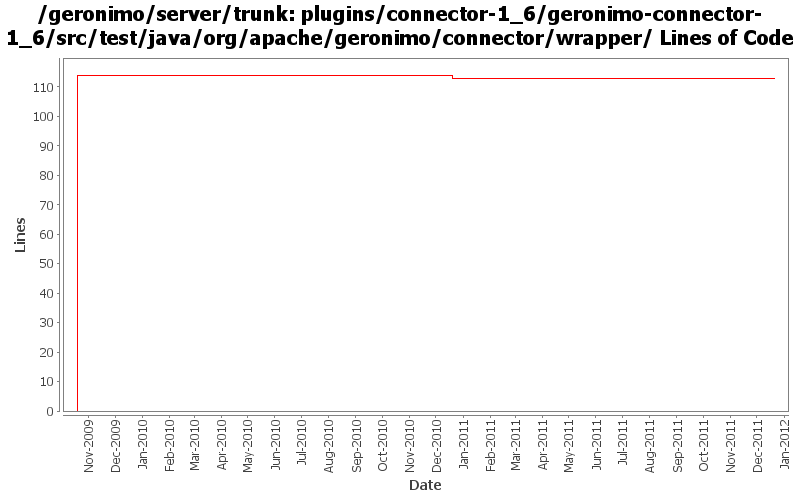

[root]/plugins/connector-1_6/geronimo-connector-1_6/src/test/java/org/apache/geronimo/connector/wrapper
 outbound
(1 files, 207 lines)
outbound
(1 files, 207 lines)
 security
(1 files, 35 lines)
security
(1 files, 35 lines)

| Author | Changes | Lines of Code | Lines per Change |
|---|---|---|---|
| Totals | 4 (100.0%) | 118 (100.0%) | 29.5 |
| djencks | 2 (50.0%) | 115 (97.5%) | 57.5 |
| rickmcguire | 1 (25.0%) | 2 (1.7%) | 2.0 |
| xuhaihong | 1 (25.0%) | 1 (0.8%) | 1.0 |
GERONIMO-6240 Fix build up to system-database. Builder not found for it
1 lines of code changed in 1 file:
No function change, just remove many unused import declarations
1 lines of code changed in 1 file:
GERONIMO-5230 Add Bean Validation Support to the connector 1.6 implementation.
Changes to Geronimo base.
2 lines of code changed in 1 file:
move packages to avoid split-packagle problems with tx components
114 lines of code changed in 1 file: